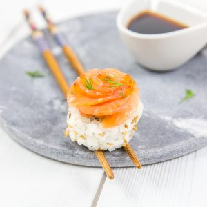
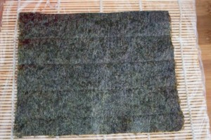
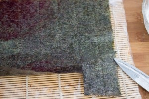
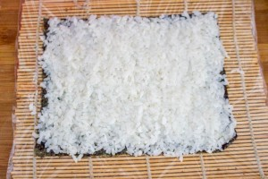
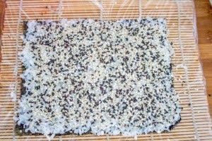
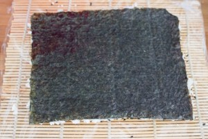
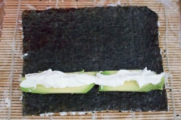
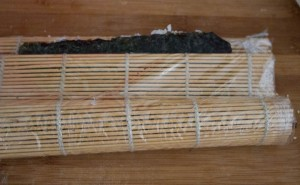
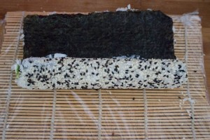
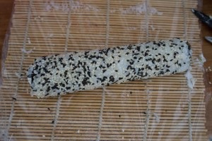

California rolls aux deux saumons

Aujourd’hui c’est avec cette recette de california rolls aux deux saumons que va commencer notre journée de mercredi!
Vous l’aurez compris, le mercredi c’est sushis (tellement facile quand ça rime^^)!! Blague à part, vous ne trouvez pas que les sushis, makis et autres yakitoris se sont bien installés dans nos quotidiens bien trop stressants au planning bien trop chargé? Sérieusement, je pense consommer au minimum quatre fois par mois ces petites bouchées asiatiques et c’est un plaisir à chaque fois (c’est surtout bien meilleur qu’une pizza surgelée ou que n’importe quel plat à réchauffer au micro-onde) ! De mon côté, (quand c’est moi qui les prépare) je fais presque toujours des california rolls (allez comprendre pourquoi mon entourage préfère la feuille de nori à l’intérieur plutôt qu’à l’extérieur^^). Avant je détestais le poisson cru et pourtant aujourd’hui quand c’est bien préparé j’en raffole. Mais c’est vrai que tout le monde n’aime pas ça et c’est ce qui peut en rebuter plus d’un à consommer california rolls, maki & sushi! La bonne nouvelle, c’est que ces spécialités asiatiques commencent à « s’européaniser » de plus en plus et vous pouvez très bien ne mettre que de l’avocat, du cream cheese, des herbes fraîches, des tomates séchées etc (ou comme ici de la mangue et noix de saint jacques!)… Dans la recette d’aujourd’hui, j’ai mis du saumon cru à l’intérieur des california rolls et de l’avocat. A l’extérieur j’ai fait une fleur avec du saumon fumé (je crois de mémoire que pour ceux-là c’était de la truite et non pas du saumon mais ça ne change pas grande chose) puis j’y ai ajouté des œufs de truite et c’était un régal!! La fleur est très facile à former, il suffit d’enrouler des lamelles de saumons sur elles-mêmes et le tour est joué. Je vous laisse découvrir tout ça et je vous dis à très très vite avec une nouvelle recette 🙂
Ingrédients
- Eau - 300ml
- Riz à sushi - 300g
- Vinaigre de riz (assaisonné) - 4 càs
- Saumon cru - environ 200g
- Saumon ou truite fumée - 4-5 tranches (dépend du nombre de california que vous comptez faire et de la taille de vos roses)
- Avocat - 1
- Aneth
- Sésame doré
- Facultatif : oeuf de truites ou de saumon
- Un bol d'eau tiède
- Natte de bambou
Instructions
- Laver le riz à l'eau claire.
- Dans un saladier, verser le riz dans un grand volume d'eau, l'eau va devenir blanche. Jeter l'eau puis renouveler l'opération jusqu’à ce que l'eau soit claire (environ 3/4 fois)
- Faire bouillir les 300ml d'eau dans une casserole.
- Quand l'eau bout, verser le riz, baisser le feu au minimum et couvrir
- Laisser cuire à couvert 15 minutes
- Quand le riz est cuit verser 4 càs de vinaigre de riz.
- Bien mélanger le riz et laissez-le refroidir
- Éplucher et couper l'avocat en tranches dans le sens de la longueur et faites de même avec le saumon cru
- Pour le saumon fumé détaillez-le de manière à avoir de belles et longues lamelles (plus elle sera longue, plus les roses seront grosses)
- Recouvrir de film étirable le bambou (facultatif mais bien plus hygiénique)
- Déposer la feuille de Nori (je découpe 1/4 de la feuille de Nori car celles que j'achète sont à mon goût trop grandes et les california bien trop gros)
- Tremper les mains dans l'eau et prendre une poignée de riz (mieux vaut en prendre pas beaucoup que trop car on peut réajuster après)
- Partir du bord et étaler le riz avec les mains sur la feuille de Nori.
- Si vous n'en avez pas pris assez, boucher les trous
- Saupoudrer le riz de graines de sésame
- Retremper les mains dans l'eau pour vos débarrasser des grains de riz collés et retourner la feuille d'algue
- Placer votre garniture sur le bas de la feuille d'algue et sur toute la longueur
- Commençons le "pliage"
- A l'aide du "bambou" rouler la feuille de Nori en serrant fort
- Placer au frais le temps de faire les suivants









Les tips de la communauté
Les commentaires ne contiennent pas d'informations exploitables supplémentaires.